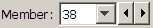

The Member Details is an interactive explorer that displays detailed engineering information about the materials, , and of all selected . When no members are selected, it displays information about the current contents of the
Member Details and the Member List occupy the same screen location. If the Member List is visible, you can change to Member Details by clicking its tab at the upper right corner.
The Member Details include:
If members are selected a separate Members tab is presented for each set of members consisting of the same material and cross-section. The lengths of these members are drawn as vertical lines on the strength curve with one highlighted. The highlighted member can be selected with the Member: selector . Click the arrow buttons or select a member number from the drop down list. All tabs can be drawn on a single strength curve by selecting the check box.
Member length and cost will be shown in the Member Details only when exactly one member is selected.